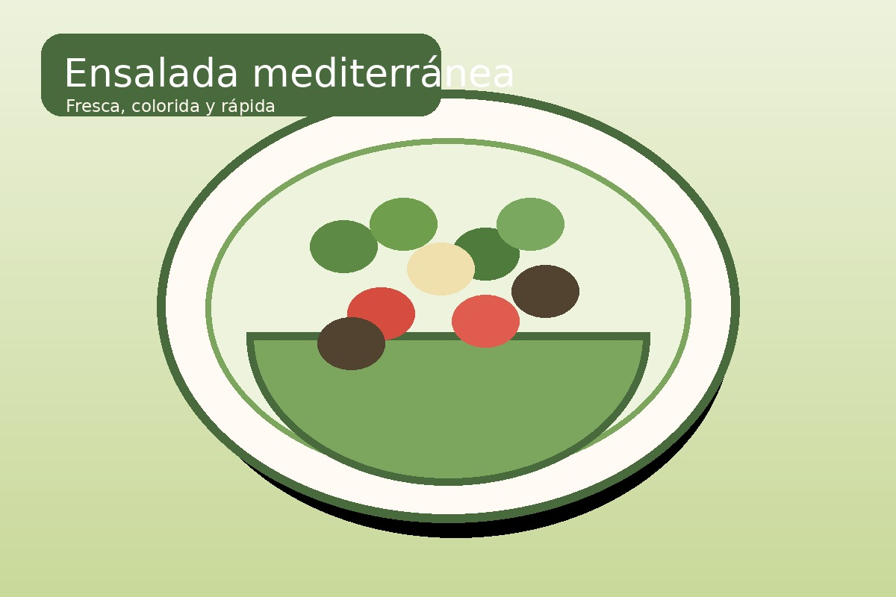
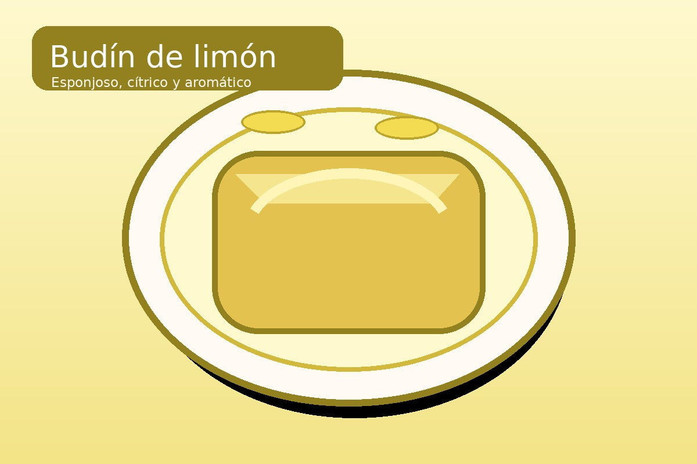
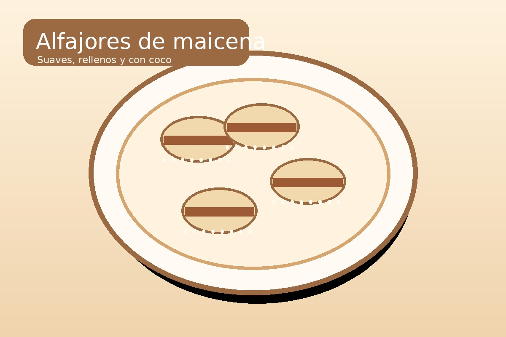

Catálogo
Recetas para cada momento.
Seleccioná una categoría para ir directamente a sus recetas. Cada ficha incluye una imagen y el PDF listo para descargar.
Recetas saladas
Opciones sabrosas y versátiles para almuerzos, cenas o encuentros.


Recetas dulces
Preparaciones caseras para la merienda, el postre o una ocasión especial.


